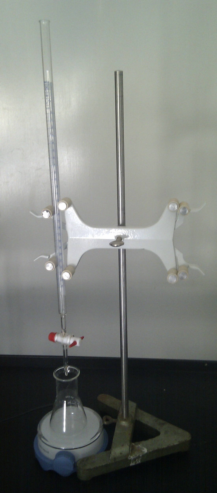

Formålet med dette kapitel er:
Man vil ofte være i den situtation, at man har en opløsning af et kendt stof, hvor stofmængdekoncentrationen er ukendt. Denne stofmængdekoncentration kan bestemmes vha. en analysemetode der kaldes titrering. I dette kapitel ser vi konkret på hvordan man kan bestemme stofmængdekoncentrationen af natriumchlorid opløst i vand.
Vi skal have bestemt stofmængdekoncentrationen af opløst natriumchlorid i vand. Fra forrige kapitel, ved vi at natriumchlorid er letopløseligt i vand. Dvs. vi kan skrive opløsningen af natriumchlorid i vand, som
NaCl(s) → Na+(aq) + Cl-(aq).
Sølv(1+)nitrat er ligeledes letopløseligt, vi kan skrive sølv(1+)nitrats opløsning i vand sådan:
AgNO3(s) → Ag+(aq) + NO3-(aq).
Imidlertid er sølv(1+)chlorid (AgCl) tungtopløseligt. Hvis man derfor tilsætter sølv(1+)nitrat til en opløsning af natriumchlorid i vand, så vil der ske en fældningsreaktion hvor sølv(1+)chlorid bliver fældet:
Ag+(aq) + Cl-(aq) → AgCl(s).
Når man drypper sølv(1+)nitrat i en opløsning af natriumchlorid, ser man at der dannes et mælkehvidt bundfald. Dette bundfald er den dannede sølvchlorid.
Efterhånden som vi tildrypper sølv(1+)nitrat til en opløsning af natriumchlorid, vil chloridionerne blive fældet. Men så længe vi har tilsat færre sølvioner (fra sølv(1+)nitrat) end der er chloridioner (fra natriumchlorid), vil der stadig være chloridioner i opløsningen. Først på det tidspunkt hvor vi har tilsat lige så mange sølvioner som der oprindelig var chloridioner, vil alle chloridioner være fældet (og dannet et bundfald af sølvchlorid). Stofmængden af ioner er netop et mål for antallet af ioner. Når alle chloridioner er blevet fældet, så må der netop gælde at den oprindelige stofmængde af chloridioner er lig stofmængden af tilsatte sølvioner. Formelt formuleret:
n(Ag+) = n(Cl-).
Hvordan ser vi så i praksis hvornår vi har tilsat lige så stor en stofmængde af sølvioner, som der oprindelig var chloridioner? Vi bruger en indikator. Det er et stof, der har den egenskab at det skifter farve når ovenstående betingelse er nået.
Vi bruger konkret et stof der hedder kaliumchromat (K2CrO4). Så længe stofmængden af tilsatte sølvioner er mindre end den oprindelige stofmængde af chloridioner, så er indikatoren farveløs. Men når stofmængderne af de to ioner er ens, så skifter vores indikator farve til rød. Hvis vi derfor gradvist tilsætter sølv(1+)nitrat, så ved vi at når indikatoren skifter farve, så gælder betingelsen n(Ag+) = n(Cl-). Dette kan vi senere anvende til bestemmelse af stofmængdekoncentrationen af natriumchlorid.
En forsøgsopstilling er vist på figur 8.1. I kolben afmåler vi vores opløsning af natriumchlorid tilsat nogle dråber kaliumchromat (indikator). Vi kunne fx bruge 20,0 mL (0,020 L) natriumchloridopløsning. Kolben står på en magnetomrører, og i kolben er der en magnet. Det sikrer omrøring under forsøget.
Over kolben har vi en burette (et langt smalt rør) med sølv(1+)nitrat. Stofmængdekoncentrationen af sølvnitrat er kendt (fx 0,100 mol/L). Vi åbner nu for burettens hane og tilsætter langsomt sølv(1+)nitrat under omrøring. I det øjeblik indikatoren skifter farve (fra farveløs til rød), lukker vi burettens hane. Vi ved nu at der gælder n(Ag+) = n(Cl-).
På buretten aflæser vi nu det forbrugte volumen af sølvnitrat. Lad os fx sige det er 14,4 mL (0,0144 L).

For at beregne stofmængdekoncentrationen af natriumchlorid, gør vi følgende:
Alt i alt, har vi ved en (fældnings)titrering fundet ud af, at stofmængdekoncentrationen af natriumchlorid i opløsningen er 0,072 mol/L.
Enheden mol/L (mol pr. liter) er praktisk i kemi. I dagligdagen er det mere praktisk (og forståeligt) at bruge masseprocent. Vi kan regne om fra stofmængdekoncentration gennem tre skridt. Vi bruger eksemplet fra forrige afsnit, dvs. vi har natriumchlorid (NaCl) opløst i vand med en stofmængdekoncentration på 0,072 mol/L.
De tre skridt: